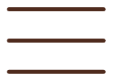
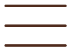

History
FArbucks is the answer to people's needs where they can feel "aromatic coffee" in their lives. This manifests itself in drinks with quality ingredients. The brand is supported by certified quality assurance and aims to be admired in the local market.
2019
FArbucks opened first outlet in Kebon Jeruk
2020
FArbucks expanded to 18 outlets around Jakarta, Bogor, Depok, Tangerang, Bekasi, and Bandung
2022
FArbucks expanded to 20 outlets around Solo, Semarang, Jogjakarta, Bali, Malang, Medan, and Palembang
INNOVATION
FArbucks understands that providing a great brand experience is about understanding customer needs,
attitudes, and behaviors, meeting those needs, and continually finding innovative ways to go beyond
them.
Together we reaffirm our leadership in coffee. Innovate with gamified FArbucks to allow
loyalty members to play games and earn points for free products.
Meet Our Teams
Administrative Assistant
The administrative assistant supports the coffee business from the office. They deal with documentation, business correspondence, telephone support and customer service, to scheduling and reporting issues related to coffee shop operations.

Green Coffee Buyer
Green coffee buyers are the closest parties to coffee vendors who collaborate with coffee shops. They are the ones who directly buy coffee beans from coffee farmers, taste them before deciding which beans will be passed on to the roaster.

Barista
The barista's job is to prepare a variety of coffee blends ordered by customers. They also cater to them, from giving menu suggestions to handling payments at the cashier. They must be friendly so that customers feel at home.

Brand Manager
Brand managers must ensure that their coffee shop brand remains relevant to existing and prospective customers. They also have to do analysis, listen to trends, to detect markets related to the coffee product branding business they want to sell.

Coffee Store Manager
The coffee shop manager is in charge of overseeing the operations of the coffee shop. In addition to developing and implementing sales-boosting strategies, they also motivate staff to create a positive customer experience.

Marketing Manager
The marketing manager develops product marketing policies. They identify target markets, create demand for the company's products, assist in pricing strategies, and analyze market trends.
Assistant Store Manager
The assistant manager is responsible for the daily operations of the coffee shop. They support managers in their efforts to increase sales, hire and train baristas, monitor store inventory, and resolve any issues that may arise during working hours.
Social Media Manager
Social media managers are responsible for their coffee shop brands. For example: creating brand awareness, identifying target markets, social media campaigns, following trends, to accommodating customer suggestions which usually go directly to the brand's social media page DM.